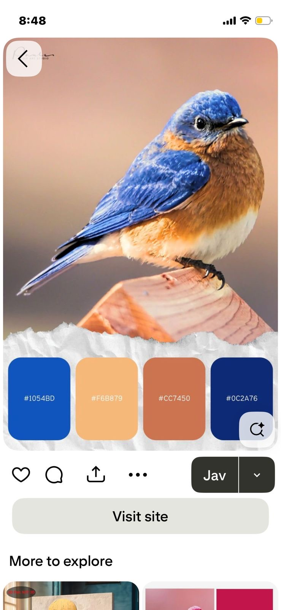
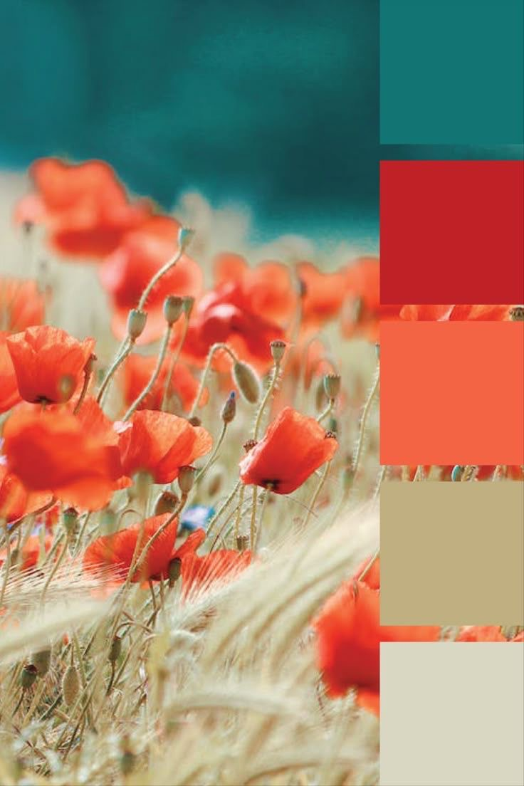
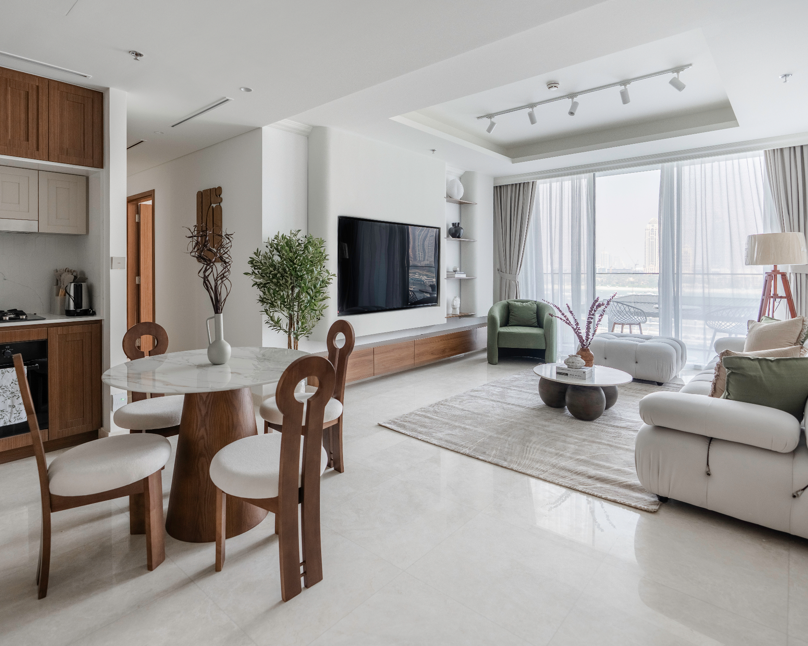
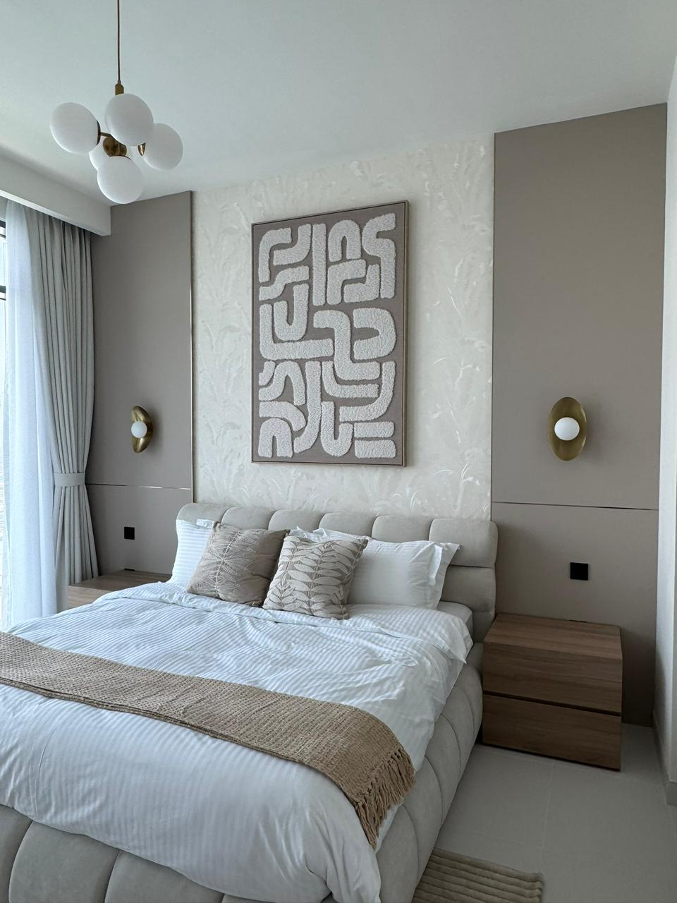

A calm, light-filled scheme for the living room & bedroom — pared-back forms, breathing space, and a quiet earth-and-sky palette woven through with living greenery.
“We would like minimalism — no bulky or heavy-looking furniture. The energy should look flowing and give a spacious feeling, with space to accommodate pots and greens inside.”
Both palettes you shared share one quiet idea — a cool, calming blue/teal set against warm, sun-baked earth tones. We build on that: a soft neutral canvas of plaster, sand and linen keeps everything light and open, while clay, teal and a deep sky-blue are used sparingly as grounding accents. Greenery becomes the living layer that ties it together and brings the “flowing energy” you're after.

Sky blue + navy grounded by warm sand & terracotta — the cool/warm balance at the heart of the scheme.

Teal, coral & soft khaki — adds the energetic warm “pop” and the natural greens of foliage.
Roughly 70% calm neutrals, 20% earthy warmth, 10% cool accent — the ratio that keeps a minimalist room feeling spacious rather than busy.
Plaster, warm white, greige & khaki on walls, large upholstery and flooring. Keeps the eye moving and the room feeling open.
Sand & clay in timber, ceramics, a single textile or rug. Brings the sun-baked, lived-in warmth.
Teal, sky blue & a touch of coral in cushions, art and accessories only — easy to refresh seasonally.
Open, low and airy — furniture that sits light on the floor so the space reads bigger and the energy flows from one zone to the next.

No bulk: slim-arm seating, raised legs, glass and slender metal, and plenty of negative space between pieces.
A serene retreat — even lighter and quieter, with the palette dialled down to its softest, most restful tones.

A low platform bed and floating bedside surfaces keep everything grounded and uncluttered.
Minimalism stays warm through natural, tactile materials — light timbers, soft weaves and matte stone rather than glossy or ornate finishes.
Pale, open-grain timber for tables & shelving — airy, never dark or heavy.
Drapes, bedding & upholstery with a soft, relaxed, breathable hand.
Honed stone for a coffee or side table — quiet texture, calm tone.
Planters, vases & vessels that carry the earthy accent in small doses.
Greenery is part of the plan, not an afterthought — designated spots in both rooms so plants enhance the flow instead of cluttering it.
One tall sculptural plant (olive, fiddle-leaf or bird-of-paradise) in a clay or matte-white floor pot to anchor a corner of the living room.
Trailing pothos and small succulents on the floating shelves and media unit — softening hard lines at eye level.
A low, air-purifying plant (snake plant / ZZ) on a slim plant stand by the window for restful, living texture.
Raised furniture lets the eye and floor run underneath — instantly more spacious.
Fewer, better pieces with breathing room between them. Empty space is intentional.
Low-slung silhouettes draw the ceiling up and keep sightlines open across the room.
Saturated tones live in soft, swappable accessories — never in the big, permanent pieces.
Concealed storage keeps surfaces clear so the room always reads serene.
Living plants in both rooms carry the “flowing energy” and connect the spaces.